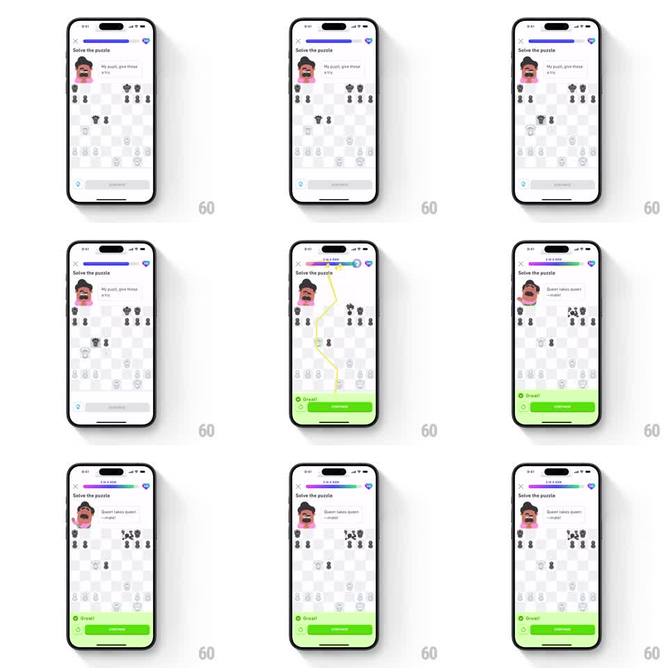

Media
Frame-by-frame

Rebuild this animation 1:1: Duolingo Chess's 5-in-a-row streak celebration - the header progress bar sweeps with a glowing green-to-purple gradient tagged "5 IN A ROW", a yellow lightning bolt streaks diagonally across the chessboard, the coach mascot breaks into an open-mouth grin, and the green "Great!" banner slides up.

Rebuild this animation 1:1: Duolingo Chess's 5-in-a-row streak celebration - the header progress bar sweeps with a glowing green-to-purple gradient tagged "5 IN A ROW", a yellow lightning bolt streaks diagonally across the chessboard, the coach mascot breaks into an open-mouth grin, and the green "Great!" banner slides up. ## Integration Integration: stack-agnostic spec - springs given as stiffness/damping, timed motions as duration + curve; map every value to your framework and animation library of choice. ## Scene Light chess puzzle screen. Top: close X, progress bar (purple base), gem counter. Coach avatar with speech bubble (ends on "Queen takes queen - mate!"). Center: chessboard with the puzzle position. Bottom: gem row, SHOW HINT, then the green success sheet with check icon, "Great!" and CONTINUE. ## Motion spec Pattern: streak milestone with lightning streak and banner reveal. - The progress bar's fill sweeps to its new segment (400ms ease-out) as a glowing gradient (green to purple) overlays the bar and the "5 IN A ROW" chip pops above it (scale 0 -> 1.1 -> 1.0, 200ms). - A yellow lightning bolt draws itself diagonally across the board corner to corner (stroke draw, 250ms), holds with a glow (150ms), then shatters into sparks that fade (250ms). - The board does a quick shake (translateX +/-4pt, 3 cycles, 200ms) as the bolt lands. - Coach avatar swaps to the excited open-mouth expression with a scale pop (1.0 -> 1.15 -> 1.0, 200ms) and the speech bubble crossfades to the mate line (150ms). - The green "Great!" sheet slides up (280ms ease-out) as the shake settles. ## Calibration - Bolt first, shake second, banner third - the board reacts to the strike before the UI celebrates. - Keep the bolt saturated yellow with a soft outer glow; it should overpower the board for its 400ms. ## Reduced motion Gradient sweep without the bolt; no shake; banner fades in over 200ms. ## Don't miss - The gradient glow lives on the progress bar, not the whole header. - The coach expression change lands with the bolt, not with the banner.